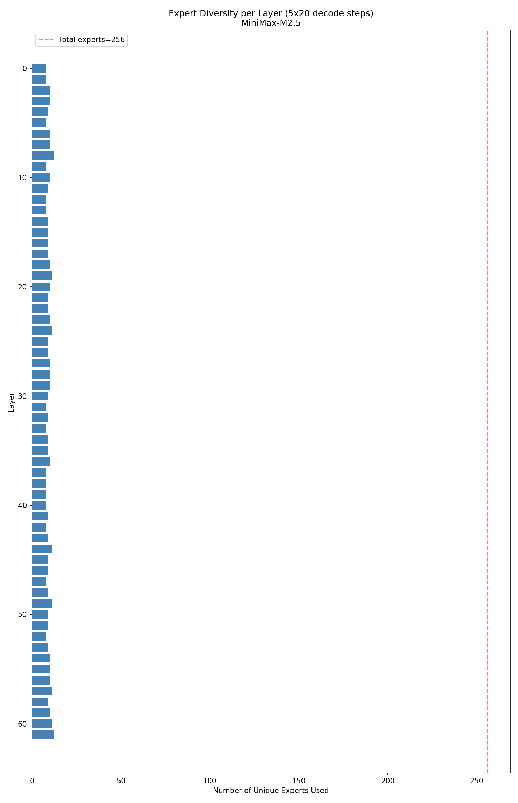
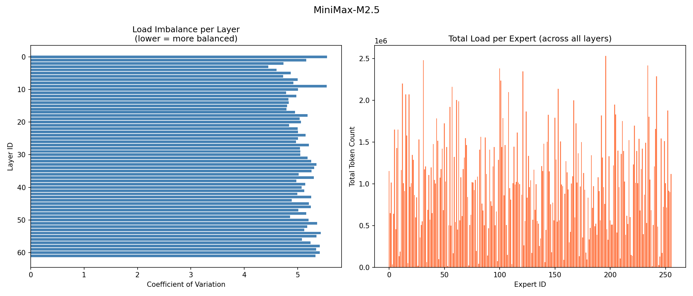
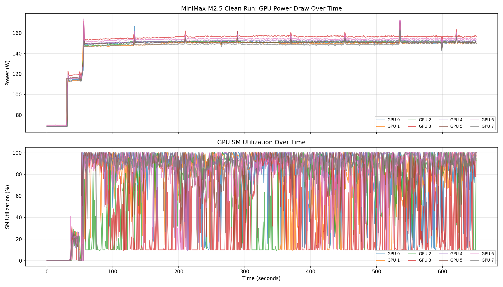
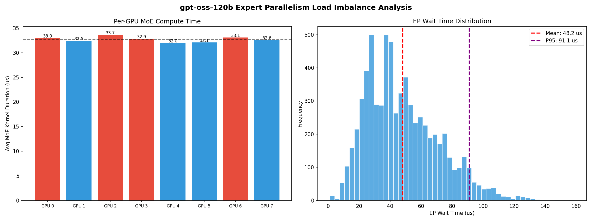

MoE Expert Load Profiling on H100 GPUs
Cornell Zhang Research Group | Advisors: Prof. Zhiru Zhang, Yizhao Gao
Profiled Mixture-of-Experts inference on 8× NVIDIA H100 80GB GPUs to characterize expert selection patterns and quantify the performance cost of load imbalance in Expert Parallelism. Analyzed three MoE models — MiniMax-M2.5 (230B params), gpt-oss-120b (117B), and gpt-oss-20b (21B) — using SGLang, NVIDIA Nsight Systems, and DCGM.
Key Results
Plots

EP Wait Time Analysis: Per-GPU MoE compute duration and wait time distribution for MiniMax-M2.5. GPU 3 consistently takes longest (12.2μs avg), creating a mean 32.6μs wait for faster GPUs.

Normalized Expert Load Heatmap: Token routing distribution across 256 experts and 62 layers during prefill on pile-10k (10,000 samples). Hot spots indicate heavily-loaded experts.

Expert Diversity: Each layer activates only 8–12 out of 256 experts per decode step (<5% utilization), concentrating load on a small subset of experts.

Load Balance Summary: Coefficient of variation of 4–5.5 across all layers (left) and total token load per expert showing 4–5× variance (right).

GPU Power & SM Utilization: DCGM monitoring during clean MiniMax-M2.5 decode run. SM utilization oscillates between ~15–100%, confirming GPU idle periods during EP synchronization.

gpt-oss-120b EP Analysis: Higher mean EP wait time (48.2μs vs 32.6μs) despite fewer experts (128 vs 256), suggesting more severe routing imbalance.
Methodology
Decode Trace
500 MATH-500 problems, 512 max new tokens. Captures per-token expert selection across 16,384 decode steps per model via instrumented SGLang inference.
Prefill Profiling
10,000 pile-10k samples. Captures aggregate token routing statistics across all experts and layers, exposing structural load imbalance during the prefill phase.
Hardware Profiling
Nsight Systems traces exported to SQLite (836M+ events). Queried for
fused_moe_kernel timing spread across all 8 GPUs to isolate EP synchronization
cost.
DCGM Monitoring
DCGM power and SM utilization sampled at 1-second intervals during clean inference runs. Corroborates Nsight findings with system-level GPU activity signals.
Technologies